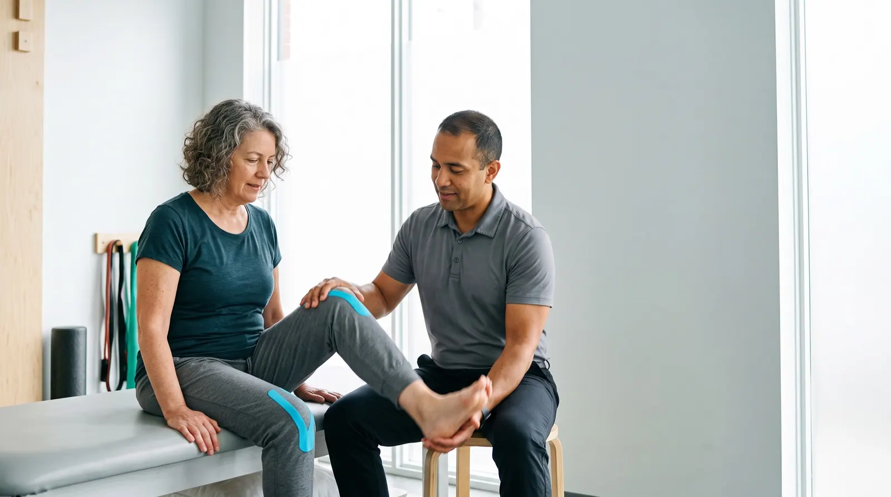
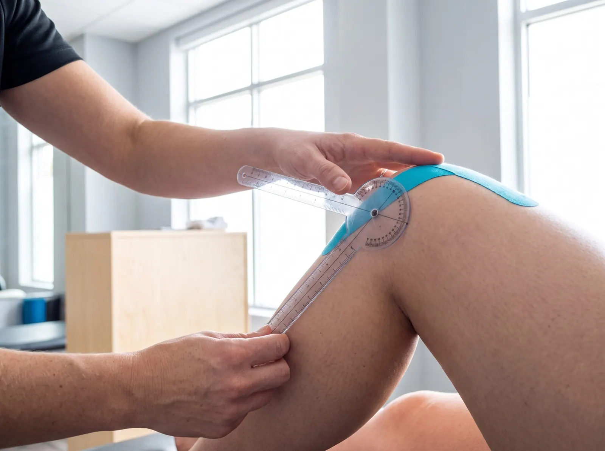
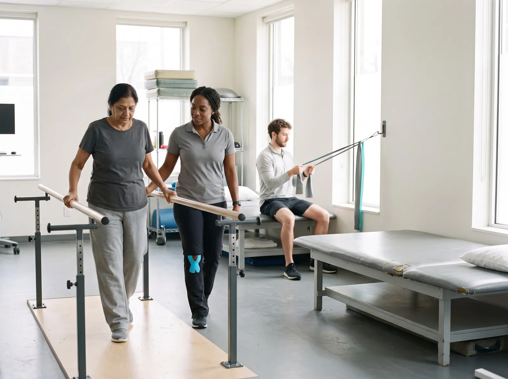
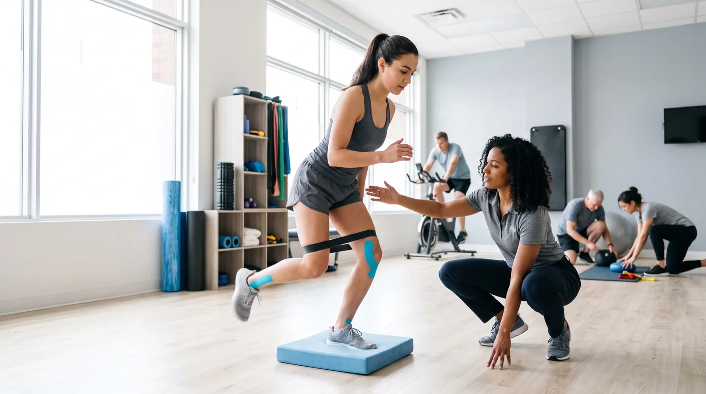
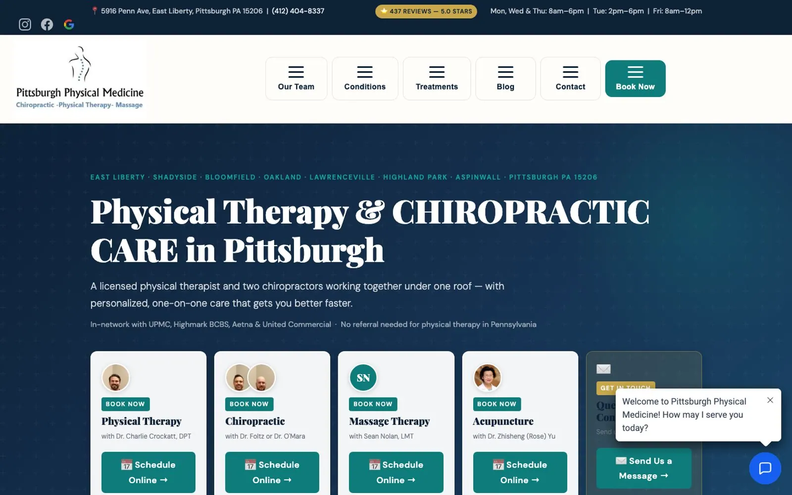
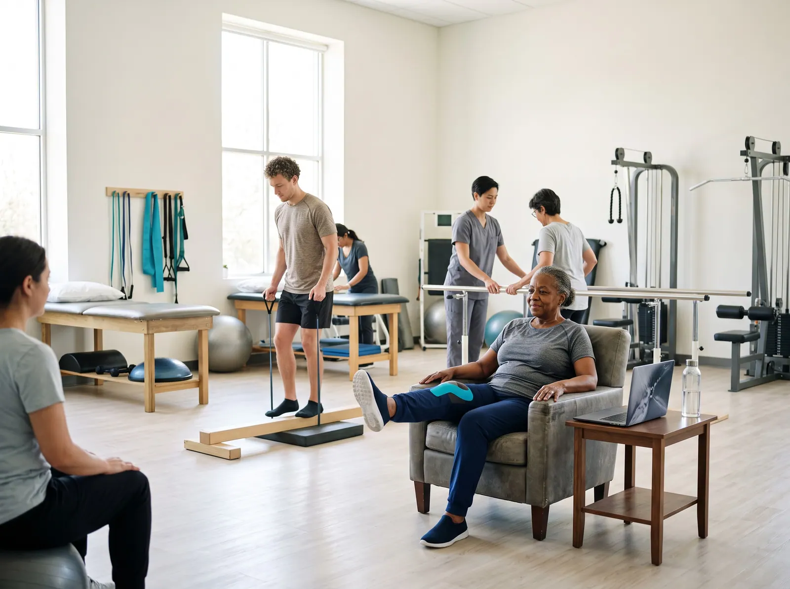

The first assessment happens online
We read the websites of 148 independent physical therapy, chiropractic, sports rehab and specialty clinics in the US the way a patient does: on a phone, often in pain, asking whether the clinic treats their problem, whether they need a referral and what it will cost.
0 websites
Four kinds of clinic
Thirteen checks
The State of Independent Physical Therapy Websites · Q4 2026 · edition 2026-Q4
0%
of clinicsThe headline
of the clinic websites in this study answer the patient's question.
Patients ask nine things. The median clinic answers four.
Across 148 independent clinic websites, the median site answers four of the nine patient questions this edition tests. 27% say a patient can come in without a referral; 18% show a self-pay price.1

What a patient can find out before calling
We turned nine questions people ask before they book a physical therapist or chiropractor into nine checks, then read each site for an answer a patient in pain could find on a phone.
Share of all websites answering each question · a full half-circle = 100% · magenta = fewer than a third
Figure 1. Share of sites that answer each question on the home page or a page it links to, read from the served HTML. Sorted from least to most answered.


Four kinds of clinic, side by side
Outpatient physical therapy (36): median score 78, no referral needed stated on 28%, online booking on 61%. Chiropractic (47): median score 74, no referral needed stated on 13%, online booking on 83%. Sports and orthopedic rehab (26): median score 77, no referral needed stated on 50%, online booking on 73%. Massage, wellness and pelvic health (39): median score 76, no referral needed stated on 28%, online booking on 79%.
Where each website scores
Overall website score out of 100, one dot per site; the cyan rule is each group's median
Figure 2. Overall website score out of 100, one dot per site. The cyan rule marks each group's median.
Four clinics, up close
Four real sites from this edition, one strong, two in the middle and one weak. Each photograph shows the kind of moment its findings describe; the clinic itself stays anonymous. The number is the overall website score; each dot is one check, filled when the site passes it.
Pittsburgh Physical Medicine
Chiropractic, Pittsburgh, PA. It answers 9 of the 9 patient questions this edition tests, loads fast on phones and describes its images; like most sites in this study, it has yet to pass text contrast (WCAG 1.4.3). Its overall website score is 89/100. Named as a positive example; every other site in this report is anonymous.

What it does well
- Street address plus opening hours
- Three or more conditions named
- Book or request a visit online
- Clinicians named with credentials (DPT, DC, OCS, LMT)
- Insurance plans named, or out of network stated
- First visit described: length or what happens
- No referral needed (direct access) stated
- A self-pay price shown for a visit or session
- Reviews marked up, in a widget or quoted
- Real phone visitors see the main content in 1.2 s (Chrome UX Report, 75th percentile; good is 2.5 s or less)
- Every image has a text description (WCAG 1.1.1)
- Clikiti pillar scores of 90 or more: usability 94, accessibility 91, SEO 97
The patients left out
Many patients are recovering from surgery, a fall or a stroke. A patient using a screen reader, a keyboard or an old phone is still a patient. These checks measure whether the site lets them in.3
Table 1. Technical checks, share of the 148 sites that fail each one.

How the sites were read

Read
The home page and up to eight pages it links to (conditions, new patients, insurance and rates, team, about, reviews, booking, contact), read as a server delivers them. The patient questions are answered here, by fixed published rules (Appendix A4).
Measure
Google Lighthouse (PageSpeed Insights) in a phone and a desktop render, with Chrome UX Report field data where it exists: load time, contrast and image descriptions. Repeatable.
Review
An expert usability review of each home page against Nielsen's heuristics, used only in the usability part of the score. Every issue must name the heuristic, a severity and the element, or it is dropped.
Read the full methodology Sample, definitions, scoring, precision and limitations, in Appendix A.

For agencies and freelancers
What this means for agencies
what to fix first, and how to pitch it
For small agencies and freelancers who sell websites to independent physical therapy and chiropractic clinics. We scanned 148 of their websites: 0% score under 60 out of 100, and 83% leave at least three of the questions patients ask unanswered. Here is where the winnable work is, which problems to lead a pitch with, and how to show them without days of spec design.
Who is realistic to win
Chiropractic are the most winnable: the lowest median score in this report (74 out of 100), and 0% of them score under 60. Their problems are visible, specific and fixable by a small team.
| Type | Sites | Median | Under 60 |
|---|---|---|---|
| Outpatient physical therapy | 36 | 78 | 0% |
| Chiropractic | 47 | 74 | 0% |
| Sports and orthopedic rehab | 26 | 77 | 0% |
| Massage, wellness and pelvic health | 39 | 76 | 0% |
Score out of 100. "Under 60" is the share of sites that miss most of what a patient looks for.
5 problems to lead a pitch with
- 91%Loads in under 2.5 s on a phone Build
Resize and compress the hero image or video, defer booking and chat scripts, aim for under 2.5 s on a phone.
Your home page takes several seconds to appear on the phone of someone in pain.
- 82%What if I pay myself? Content
Publish the self-pay rate the front desk already quotes: the first evaluation and a follow-up visit, or a package price.
Patients with high deductibles want to know what a visit costs. Your site gives them no number at all.
- 80%Text contrast passes 4.5:1 Quick fix
Raise text contrast to at least 4.5:1 in the theme: white text on photographs and pale grey body text are the usual failures.
Parts of the site are hard to read, and it is a WCAG failure.
- 78%Physiotherapy, MedicalBusiness or health-business structured data Quick fix
Add Physiotherapy or MedicalBusiness structured data (Chiropractic for chiropractors) with the address, phone and hours.
Search engines and assistants have to guess what kind of clinic you are and when you are open.
- 73%Do I need a referral? Quick fix
Say on the home page and the new-patient page whether a patient can come in without a doctor's referral, and any limits the state or the plan sets.
Many patients think they need a doctor first. Your site never tells them they can book you directly.
Share of sites with the problem. WCAG items are accessibility failures. Every check cites a standard in the method section.
How to show a prospect their problems, and a redesign
- 1Lead with their problem, not your services
Open with one question the site fails, for example loads in under 2.5 s on a phone (91% of sites in this report miss it), and show the exact page where the answer should be.
- 2Put a number on it
Compare their site with the sector: across 148 independent physical therapy, chiropractic, sports rehab and specialty clinics sites, the median scores 76 out of 100 and answers 5 of the 9 questions patients ask. A number travels further inside the client than an opinion.
- 3Show the fix without days of spec work
A rough redesign that answers those questions persuades better than a proposal, but it usually costs a designer a day or two per prospect. You can sketch it by hand, or use Clikiti: the scan is free and shows any site's problems in about a minute, and paid plans draft a redesign of the home page from the prospect's own brand, from about $2.33 per pitch.
Scan a prospect's site free No sign-up. You see what the prospect would see.
Show every clinic what its patients see
Clikiti reads a clinic's site the way a patient does, states what it found, and generates the redesign you present before the first call.
See your market on ClikitiMethodology
How this study was designed, who was included, what was measured and how far the results can be relied on. It is written so that an agency can share it with a clinic owner who wants to check the evidence behind a pitch.
A1. The research question
When a patient with a sore back, a stiff knee or a sports injury looks an independent clinic up online, usually on a phone, can they find out where it is and when it is open, whether it treats their problem, whether it takes their insurance, what a visit costs if they pay themselves, whether they need a doctor's referral, whether they can book online, who will treat them and with what credentials, what happens at the first visit, and whether other patients vouch for it?
Population. Independently owned US clinics with one to three locations and their own website, in four groups: outpatient physical therapy, chiropractic, sports and orthopedic rehab, and massage, wellness and pelvic-health specialists. These are the clinics a small or mid-size web agency can realistically win as clients.
A2. Who was studied
The sample was built from local search listings, city by city, then screened so that every site in it is one an independent agency could realistically win.
| Source | What it contributes | Sites |
|---|---|---|
| Local search, physical therapy | Independent outpatient physical therapy clinics found in local search results, city by city | 86 |
| Local search, chiropractic | Independent chiropractic practices found in local search results, city by city | 52 |
| Local search, sports and orthopedic rehab | Independent sports medicine, orthopedic and performance physical therapy clinics found in local search results, city by city | 27 |
| Local search, massage, wellness and pelvic health | Independent massage therapy studios, wellness clinics and pelvic-health or women's-health physical therapy specialists found in local search results, city by city | 38 |
Included
- An independently owned clinic or practice with one to three locations in one state and its own website (not a directory, booking marketplace or social profile)
- Based in the United States
- Home page responds and shows the clinic it claims to be (each home page title was checked before scanning)
Excluded
- Hospital and health-system outpatient departments
- National and regional chains and franchises (for example ATI, Athletico, Select Physical Therapy, Concentra, NovaCare, Upstream, Results, Ivy Rehab, BenchMark, Professional Physical Therapy, FYZICAL, The Joint Chiropractic, HealthSource, 100% Chiropractic, Massage Envy, Hand & Stone) and any clinic with four or more locations or in several states
- Directories, marketplaces and lead-generation pages (Yelp, Healthgrades, Zocdoc, WebPT listings)
- Parked, placeholder, password-protected, hijacked or unreachable sites, and duplicates
| From list to sample | Sites |
|---|---|
| Candidates listed | 171 |
| Removed at screening: the site refused automated visitors (7) | −7 |
| Removed at screening: no response, or no page served to automated visitors (5) | −5 |
| Removed at screening: parked or placeholder (3) | −3 |
| Removed at editorial review: two clinics with four or more locations and a duplicate of another clinic (3) | −3 |
| Cohort | 153 |
| Region (US Census) | Outpatient physical therapy | Chiropractic | Sports and orthopedic rehab | Massage, wellness and pelvic health | All |
|---|---|---|---|---|---|
| Northeast | 9 | 12 | 9 | 10 | 40 |
| Midwest | 8 | 8 | 6 | 10 | 32 |
| South | 7 | 16 | 8 | 8 | 39 |
| West | 12 | 11 | 3 | 11 | 37 |
| All regions | 36 | 47 | 26 | 39 | 148 |
A3. How the sites were read
Pages. The home page, then for each of eight topics (conditions and services, new patients and first visit, insurance and rates, team, about, reviews, booking, contact) the best-matching link on the home page.
Speed and accessibility. Google PageSpeed Insights (Lighthouse) on a mid-range phone profile and on desktop, plus Chrome UX Report data from real visitors over the previous 28 days where Google publishes it for the site.
Crawler conduct. One request at a time to each site, at least 400 ms apart, at most nine pages per site; robots.txt is read and obeyed for every page requested; a site that refuses is left out and never retried. The crawler identifies itself as Mozilla/5.0 (compatible; ClikitiResearch/1.0; +https://clikiti.com).
A4. What was measured
9 questions patients in pain ask before they call or book, answered from what each site publishes, and 4 technical checks against published standards. A check passes only when the rule below is met; anything the crawler cannot confirm counts as not answered.
| Question | Counts as answered when | Standard |
|---|---|---|
| Where are you, and when are you open?Street address plus opening hours | Any page read states a street address and opening hours (a day and a time range, or clock times right after a day name). | Clikiti patient question 1 of 9 |
| Do you treat my problem?Three or more conditions named | Three or more distinct conditions or injuries are named on the home, conditions, about or new-patient page (for example low back pain, sciatica, ACL rehab, vertigo, pelvic pain). | Clikiti patient question 2 of 9 |
| Can I book without calling?Book or request a visit online | A link, button or embedded scheduler lets the visitor book or request a visit or a free consultation online (a phone link does not count; a scheduling service counts only when the link leaves the clinic's own site). | Clikiti patient question 3 of 9 |
| Who will treat me?Clinicians named with credentials (DPT, DC, OCS, LMT) | A clinician is named with a professional credential after the name (DPT, DC, OCS, SCS, ATC, CSCS, LMT and similar; a bare PT only after a comma, as in 'Jane Doe, PT'), or a named doctor's degree, board certification or title as a chiropractic physician is spelled out. | Clikiti patient question 4 of 9 |
| Do you take my insurance?Insurance plans named, or out of network stated | At least one insurance plan or payer is named (Medicare, Blue Cross, Aetna and so on), or the clinic says it is out of network or takes no insurance. | Clikiti patient question 5 of 9 |
| What happens at the first visit?First visit described: length or what happens | The first visit or initial evaluation is described with its length, or with at least two specific things it involves (what to wear or bring, intake paperwork, the health history, the examination or assessment, the treatment plan, a home exercise program). | Clikiti patient question 6 of 9 |
| Do I need a referral?No referral needed (direct access) stated | The site says a patient can come in without a doctor's referral or prescription, or names direct access in the context of referrals or state law. | Clikiti patient question 7 of 9 |
| What if I pay myself?A self-pay price shown for a visit or session | A dollar price is shown for a visit, session, evaluation, treatment length or package (discounts, gift cards, copays, deductibles, cancellation and no-show fees, and market-wide price ranges do not count). | Clikiti patient question 8 of 9 |
| Do other patients vouch for you?Reviews marked up, in a widget or quoted | Patient reviews are marked up for search engines (Review or AggregateRating structured data), shown through a review widget, or at least two patient testimonials are quoted. | Clikiti patient question 9 of 9 |
| Technical checks | ||
| Loads in under 2.5 s on a phoneLoads in under 2.5 s on a phone | Real visitors on phones see the main content within 2.5 seconds (Chrome UX Report, 75th percentile). Where Google publishes no visitor data, the phone lab test is used. | Core Web Vitals · LCP |
| Text contrast passes 4.5:1Text contrast passes 4.5:1 | No text on the home page fails the WCAG 1.4.3 minimum contrast of 4.5:1, in either the phone or desktop test. | WCAG 1.4.3 |
| Images have text descriptionsImages have text descriptions | Every meaningful image on the home page has a text description (WCAG 1.1.1). | WCAG 1.1.1 |
| Physiotherapy, MedicalBusiness or health-business structured dataPhysiotherapy, MedicalBusiness or health-business structured data | The site describes the clinic to search engines with Physiotherapy, MedicalBusiness, MedicalClinic, chiropractic or health-and-beauty business structured data. | Schema.org · MedicalBusiness |
A5. The website score
Each site's overall score (0 to 100) is Clikiti's website score, rubric 2.0.0. It measures the website, not the clinic, and the patient questions above do not feed it. It is a weighted mean of five pillars:
| Pillar | Weight | Based on |
|---|---|---|
| Usability | 30% | Checks of the home page for broken links and images, and an expert review of the page as rendered on a phone and on a desktop screen, against Jakob Nielsen's ten usability heuristics. Each issue must name the heuristic, a severity on the Nielsen Norman Group scale and the exact element or wording; issues without all three are discarded, and two independent passes must agree. |
| Speed | 25% | Google Lighthouse on a mid-range phone (60%) and on desktop (20%), and real-visitor Core Web Vitals from the Chrome UX Report (20%) where available. |
| Accessibility | 25% | Google Lighthouse accessibility audits (70%) and Clikiti's own WCAG checks of the served page (30%). |
| Search | 10% | Google Lighthouse SEO audits (60%) and Clikiti's own search checks of the served page (40%). |
| Trust | 10% | Google Lighthouse best-practice audits (40%) and security header checks (60%). |
Within a pillar, each issue costs points by severity (critical, high, medium, low) and by how many times it occurs; issues based on judgement count at 70% of measured ones, and duplicates of the same root cause count once. On the four clinic profiles, the number out of 100 is this overall score, and each dot is one check in its group: filled when the site passes it, hollow when it does not.
A6. Precision
With 148 sites, a share reported for the whole sample is precise to within ±8.1 percentage points at 95% confidence (worst case, a 50% share; 1.96 × √(0.25/n)). By type: outpatient physical therapy ±16.3 (n = 36); chiropractic ±14.3 (n = 47); sports and orthopedic rehab ±19.2 (n = 26); massage, wellness and pelvic health ±15.7 (n = 39). Differences between types smaller than these margins should be read as similar. Percentages are rounded to whole numbers; medians are the middle value of the sites in a group.
A7. Quality control
- Every home page in the cohort was fetched and its title checked against the listed clinic before scanning, and every home page was checked for gambling, pharmacy, adult and crypto spam
- Detection rules were checked against the evidence they record for a sample of clinics in every group, and revised before the final run
- Every published figure is recomputed from the data at build time, and a statement in the text that the data does not support stops the build
- Results are published only after automated checks for missing data, anonymity, accessibility of the report itself and the margin of error statement pass
A8. Limitations
- A point-in-time snapshot: sites change, and a site may have improved or declined since it was read.
- Only public pages were read: the home page and pages it links to. Patient portals, intake forms and multi-step booking flows were not tested.
- Answers are read from the page as a server delivers it. Content that only appears after scripts run in the browser (some schedulers and review widgets) is not seen, which the study counts as a gap a search engine or a slow phone would also meet.
- 15 candidates blocked, did not answer or were parked when screened and are not in the study; sites behind such protection may differ from those studied.
- Direct access rules differ by state and by payer; the study records whether a site tells patients, not whether a patient in that state may legally come in without a referral.
- The study reports what a website shows. It does not judge any treatment, clinician or price, or compliance with any licensing, billing or health-privacy rule.
- Automated accessibility tests find only part of what WCAG covers; keyboard and screen-reader use need a manual audit.
- The sample is a structured list of real, independent clinics, not a random draw. Margins of error are given as a guide to precision, not as a guarantee that the results hold for every clinic in the country.
A9. Data, licence and corrections
The aggregate results are published as CSV and JSON beside this report under the Creative Commons Attribution 4.0 licence: you may reuse, adapt and share them, including in client proposals, with a credit to Clikiti and a link. No per-site results are published. Corrections and removal requests are reviewed and answered personally; see the end of this report.
Clinics in this study
The 148 websites in this edition, by type. This list says who was scanned and nothing more: results in this report are shown only in aggregate or anonymously.
Outpatient physical therapy (36)
- Advanced Physical TherapyFresno, CA
- Albany Physical TherapyAlbany, NY
- Arizona Physical TherapyTucson, AZ
- Aspire Physical TherapyBend, OR
- Axis Physical Therapy and RehabEugene, OR
- Bauman Physical Therapy & WellnessLexington, KY
- Blue Rose Physical TherapyNorth Little Rock, AR
- Bodyworks Physical TherapyFargo, ND
- Brigham Physical TherapyWichita, KS
- Connecticut Physical Therapy SpecialistsWest Hartford, CT
- Day One Physical Therapy and WellnessSan Antonio, TX
- Dynamic Physical TherapyColorado Springs, CO
- East Sacramento Physical TherapySacramento, CA
- Eileen Riehman PT (Asheville Myofascial Release PT)Asheville, NC
- Empower Physical Therapy & WellnessRochester, NY
- Exercise Sport Physical TherapyKansas City, MO
- Gaffney Physical TherapyCranston, RI
- Gordon Physical TherapySpokane, WA
- Integrated Physical Therapy & Sports MedicineDes Moines, IA
- Kinetic Physical TherapyBaton Rouge, LA
- Milestone Physical Therapy & TrainingIndianapolis, IN
- Momentum Physical TherapyBurlington, VT
- Mountain View Therapy ServicesAlbuquerque, NM
- Physical Therapy Associates SpokaneSpokane, WA
- Pinyon Physical TherapySalt Lake City, UT
- Portland Integrative Physical TherapyPortland, ME
- Priority Physical TherapyAllentown, PA
- ProRehab CenterFargo, ND
- Regain Physical TherapyPittsford, NY
- Rehab With RoniChattanooga, TN
- Revival Physical TherapyMinneapolis, MN
- SJ Hands On Physical TherapyFresno, CA
- South Boise Physical TherapyBoise, ID
- Timberlane Physical TherapyBurlington, VT
- Via Physical TherapyMadison, WI
- Vitality Therapy & PerformanceTulsa, OK
Chiropractic (47)
- A. Bastecki Chiropractic & Wellness CenterLexington, KY
- Alpine Chiropractic ClinicColorado Springs, CO
- Back2Strength ChiropracticEugene, OR
- Boulevard Chiropractic & Wellness CenterWest Hartford, CT
- Brighton Chiropractic OfficeRochester, NY
- Charleston Chiropractic CenterMount Pleasant, SC
- Chiropractic Health CenterReno, NV
- CitySide Chiropractic CenterProvidence, RI
- Civano Chiropractic ClinicTucson, AZ
- Columbus Chiropractic Center WestColumbus, OH
- Crux ChiropracticChattanooga, TN
- Dominion Chiropractic ClinicRichmond, VA
- Elevation Spine CenterBend, OR
- Elite Back and BodyIndianapolis, IN
- Family Wellness ChiropracticBirmingham, AL
- Fischer Chiropractic CenterTrenton, NJ
- Fisher ChiropracticSacramento, CA
- Grant Chiropractic and Wellness CenterBillings, MT
- Hayes Chiropractic CenterPortland, ME
- Healing Hands Chiropractic & Weight LossWorcester, MA
- Hemmett Health & ChiropracticSouth Burlington, VT
- Integrated Chiropractic and RehabSioux Falls, SD
- Jumpp ChiropracticManchester, NH
- Kirk ChiropracticSavannah, GA
- Madison Chiropractic NorthMadison, WI
- Network Family ChiropracticAsheville, NC
- OMNE ChiropracticOmaha, NE
- Pelphrey ChiropracticLexington, KY
- Performance Care ClinicTulsa, OK
- Pittsburgh Physical MedicinePittsburgh, PA
- Progressive Spine & Rehab CenterManchester, NH
- Pure Health ChiropracticMinneapolis, MN
- Rathmann Chiropractic ClinicBaton Rouge, LA
- Salt Lake Sports ChiropracticSalt Lake City, UT
- Savannah Chiropractic CenterSavannah, GA
- Skinner ChiropracticLexington, KY
- Sports & Spinal Wellness CenterAlbany, NY
- Stanley Chiropractic and Acupuncture ClinicBillings, MT
- Tampa Active HealthTampa, FL
- Tampa Spine and WellnessTampa, FL
- Thrive ChiropracticBoise, ID
- TonalSpine ChiropracticChattanooga, TN
- Tracy and Keim ChiropracticEugene, OR
- West Omaha Chiropractic and Sports Injury ClinicOmaha, NE
- Westside ChiropracticGrand Rapids, MI
- Wetherington Chiropractic ClinicSavannah, GA
- Worcester Family ChiropracticWorcester, MA
Sports and orthopedic rehab (26)
- Anti-Fragile Physical TherapyAsheville, NC
- Apex PerformanceGrand Rapids, MI
- Austin Sports TherapyAustin, TX
- Birmingham Physical Therapy & Sports MedicineVestavia Hills, AL
- Burlington Physical TherapyBurlington, VT
- C.O.R.E. Physical Therapy and Sports PerformanceOmaha, NE
- CoreFit ChiropracticAllentown, PA
- Dirigo Physical Therapy & PerformancePortland, ME
- Engine Room Performance Physical TherapyPortland, ME
- Enhance Performance TherapyDes Moines, IA
- Indy Muscle & Joint ClinicIndianapolis, IN
- Langford Sports and Physical TherapyAlbuquerque, NM
- PhysioFITBend, OR
- Pittsburgh Performance Physical TherapyPittsburgh, PA
- Princeton Chiropractic and Sports RehabPrinceton, NJ
- Recharge Physical Therapy & WellnessFargo, ND
- Recovery Sports TherapyWorcester, MA
- Recovery-N-Motion Physical Therapy + WellnessCharleston, SC
- Repsher Physical TherapyAlbany, NY
- RunWell ClinicRichmond, VA
- Steady State HealthPortland, ME
- The Rehab DocsCharleston, SC
- The Training RoomAustin, TX
- The Way Physical TherapyColumbus, OH
- Voltex Physical TherapyAustin, TX
- Zona Physical TherapyBoise, ID
Massage, wellness and pelvic health (39)
- About Touch MassageEugene, OR
- Active Body Needs Therapeutic Massage and WellnessDes Moines, IA
- Adapt Physical TherapyWichita, KS
- All Bodies Physical Therapy and WellnessSacramento, CA
- Cara Lyon Physical TherapySouth Portland, ME
- Charleston Pelvic HealthCharleston, SC
- Columbus Pelvic Floor Physical TherapyColumbus, OH
- Core Strong Physical TherapyColumbus, OH
- Elementum MassageBillings, MT
- enCORE TherapyKansas City, MO
- Evolve Physical Therapy of RochesterPittsford, NY
- Femme Focus PTKansas City, MO
- Healing Space PTPrinceton, NJ
- Keystone Pelvic HealthAlbany, NY
- Kindred Physical TherapySpokane, WA
- Kos Physiotherapy + WellnessMinneapolis, MN
- Lady Bits Physical TherapySacramento, CA
- Massage Studio of Kansas CityKansas City, MO
- Miles Pelvic TherapyBend, OR
- Mind Body PelvisPrinceton, NJ
- Mindful Movement Physical TherapiesSalt Lake City, UT
- NM Pelvic Health Physical TherapyAlbuquerque, NM
- Orthohands Massage and BodyworkProvidence, RI
- PM Method Physical TherapyMountain Brook, AL
- Reno Massage and WellnessReno, NV
- Restorations Physical TherapyPittsburgh, PA
- Revival Massage & BodyworksProvidence, RI
- Revive Myofascial ReleaseLittle Rock, AR
- RVA Holistic PTRichmond, VA
- Sharp Ortho & Pelvic Health Physical TherapyBirmingham, AL
- Stratton RehabilitationSan Antonio, TX
- Thai Tranquility BodyworkProvidence, RI
- The Haven Massage TherapyColorado Springs, CO
- The Pelvic MethodChattanooga, TN
- The Pelvic PTBurlington, VT
- The TMJ and Airway PTTampa, FL
- Uplift Pelvic Health and WellnessSalt Lake City, UT
- Urban MassageGrand Rapids, MI
- Wildflower Physical Therapy & WellnessIndianapolis, IN
About this study
This report is based on automated scans of publicly available home pages, and pages they link to, run on 2026-10-15. Its findings are a point-in-time technical snapshot of each website. They are not a judgement of any clinic's care, any clinician's skill or anyone's prices, and automated checks may contain errors. This report is not a judgement of the quality of any treatment, clinician or price, and it does not assess compliance with any licensing, billing or health-privacy rule. Clikiti is not affiliated with, and does not endorse, any clinic listed here; trademarks belong to their owners. The report is provided “as is” under CC BY 4.0, without warranty of any kind. Every person in this report's photographs is AI-generated; none is a real person. The one clinic screenshot is the featured clinic's own home page, shown unaltered.
Remove my clinic from this study
We review every request and reply when it's done; removed clinics are excluded from future editions.